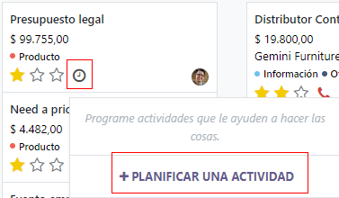
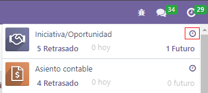
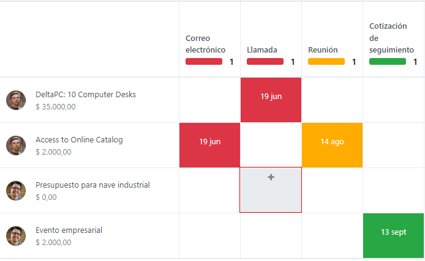
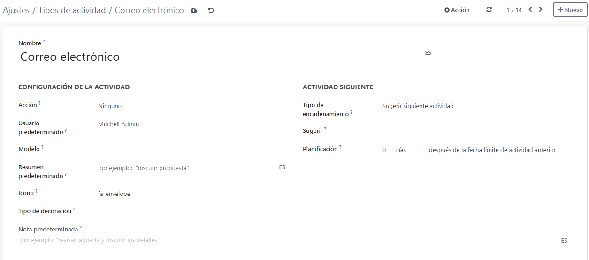
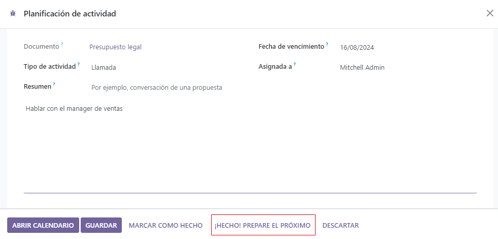

Actividades¶
Activities are follow-up tasks tied to a record in an Odoo database. Activities can be scheduled on any page of the database that contains a chatter thread, kanban view, list view, or activities view of an application.
Planear actividades¶
Una forma de crear actividades es hacer clic en el botón Planear actividades, ubicado en la parte superior del chatter en cualquier registro. En la ventana emergente que aparece, seleccione un Tipo de actividad del menú desplegable.
Truco
Las aplicaciones individuales tienen una lista de tipos de actividad específicas de esa aplicación. Por ejemplo, para ver y editar las actividades disponibles de la aplicación CRM debe ir a .
Escriba un titulo para la actividad en el campo Resumen que se ubica en la ventana emergente de Planear actividad.
Para asignar la actividad a un usuario diferente, seleccione un nombre del menú desplegable de Asignado a. Si no selecciona a nadie, el usuario que crea la actividad será asignado de manera automática.
Por último, agregue cualquier información adicional necesaria en el campo opcional Escribir una nota….
Nota
El campo Fecha límite en la ventana emergente de Planear actividad se completa de manera automática según los ajustes de la configuración para el tipo de actividad que seleccionó. Sin embargo, puede cambiar esta fecha si selecciona un día en el calendario en el campo Fecha límite.
Por último, haga clic en uno de los siguientes botones:
Planear: agrega la actividad al chatter en la sección Actividades planeadas.
Marcar como hecho: agrega los detalles de la actividad al chatter en la sección Hoy. La actividad no se planea, sino que se marca automáticamente como hecha.
Hecha y planear siguiente: agrega la tarea en la sección Hoy marcada como hecha y abre una nueva ventana para otra actividad.
Descartar: descarta cualquier cambio hecho en la ventana emergente.

Nota
Según el tipo de actividad, el botón Planear se reemplazará por un botón de Guardar o uno de Abrir calendario.
Las actividades planeadas se agregan al chatter para el registro en Actividades planeadas.

Las actividades también se pueden planear desde la vista kanban, de lista o de actividades en una aplicación.
Seleccione un registro en donde se planeará una actividad. Haga clic en el icono üïò (reloj), luego en Planear una actividad y luego complete el formulario emergente.
Seleccione el registro donde se planeará la actividad. Haga clic en el icono üïò (reloj) y luego en Planear una actividad. Si el registro ya tiene una actividad planeada, es posible que, en lugar del el icono del reloj, aparezca el icono de guilabel:üìû (tel√©fono) o de ‚úâÔ∏è (sobre).
Para abrir la vista de actividad de una aplicaci√≥n, seleccione el icono de üïò (reloj) desde la barra del menú en cualquier lugar de la base de datos. Seleccione cualquier aplicaci√≥n en el menú desplegable y haga clic en el icono de üïò (reloj) para la aplicaci√≥n que desee.
Seleccione un registro en dónde planear una actividad. Navegue a través de la fila para encontrar el tipo de actividad que desee y haga clic en ＋ (signo de más).
Nota
Los colores de actividad, y su relación con la fecha limite de la misma, son consistentes en Odoo sin importar el tipo de actividad o de vista.
Las actividades que aparecen de color verde indican que la fecha límite es en algún momento del futuro.
El color amarillo indica que la fecha límite es para hoy.
El color reojo indica que la actividad está vencida y la fecha límite ya pasó.
Por ejemplo, si crea una actividad para una llamada y la fecha límite pasa, la actividad aparecerá con un teléfono rojo en la vista de lista y con reloj rojo en la vista kanban.
Vista de las actividades planeadas¶
Para ver las actividades planeadas, puede abrir la aplicaci√≥n o y hacer clic en el icono üïò (reloj) que se ubica en la extrema derecha de las otras opciones de vista.
Esta acción abre de forma predeterminada el menú de actividades con todas las actividades programadas para el usuario. Para visualizar todas las actividades de todos los usuarios, quite el filtro Mi flujo de la barra de búsqueda.
Para ver una lista consolidada de actividades agrupadas por la aplicaci√≥n donde se crearon y por fecha l√≠mite, haga clic en el icono üïò (reloj) en el menú del encabezado para ver las actividades de esa aplicaci√≥n espec√≠fica en un menú desplegable.
Configure los tipos de actividades¶
Para configurar los tipos de actividades en la base de datos, vaya a .

Esto mostrará la página Tipos de actividad, donde podrá encontrar los tipos de actividad existentes.
Para editar un tipo de actividad existente, selecciónelo de la lista y después haga clic en Editar. Para crear un nuevo tipo de actividad, haga clic en Crear.
Primero debe elegir un Nombre para el nuevo tipo de actividad. Esto lo puede hacer en la parte superior de un formulario de actividad en blanco.
Ajustes de actividad¶
Acción¶
El campo Acción especifica el propósito de la actividad. Algunas acciones activarán comportamientos específicos después de programar una actividad.
Si selecciona Subir documento. se agregará un enlace para subir un documento directamente a la actividad planeada en el chatter.
Si selecciona Llamada o Junta los usuarios tendrán la opción de abrir su calendario para agendar esta actividad.
Si selecciona Solicitar firma se agregará un enlace en el chatter de la actividad planeada. Al hacer clic en este enlace se abrirá una ventana emergente para solicitar la firma.
Nota
Las acciones disponibles que puede seleccionar en el tipo de actividad varían dependiendo de las aplicaciones que tienen en la base de datos.
Usuario predeterminado¶
Para asignar esta actividad a un usuario específico de manera automática al programar este tipo de actividad, seleccione un nombre desde el menú desplegable Usuario predeterminado. Si este campo se deja en blanco, se asignará una actividad al usuario que cree la actividad.
Resumen predeterminado¶
Para incluir notas al crear este tipo de actividad debe ingresarlas en el campo Resumen predeterminado.
Nota
La información en los campos Usuario predeterminado y Resumen predeterminado se incluye en la actividad creada. Sin embargo, se pueden alterar antes de que la actividad se programe o se guarde.
Siguiente actividad¶
Para sugerir o activar una actividad de manera automática después de que una actividad se marca como completada, se debe configurar el Tipo de encadenamiento.
Sugerir la siguiente actividad¶
En el campo Tipo de encadenamiento seleccione Sugerir siguiente actividad. Al hacerlo, el campo de abajo cambiará a Sugerir. Haga clic en este campo para seleccionar las actividades que recomienda como actividades que le sigan a este tipo de actividad.
En el campo Horario seleccione una fecha límite predeterminada para estas actividades. Para hacerlo, configure un número específico de Días, Semanas, o Meses. Después, decida si debe pasar después de la fecha de finalización o después de la fecha límite de actividad anterior.
Puede alterar la información del campo Horario antes de agendar la actividad.
Al completar todas las configuraciones, haga clic en Guardar.
Nota
Si una actividad tiene el Tipo de encadenamiento configurado como Sugerir siguiente actividad y tiene actividades enlistadas en el campo Sugerir, los usuarios obtendrán recomendaciones de actividades que pueden ser el siguiente paso.
Activar la siguiente actividad¶
Si configura el Tipo de encadenamiento a Activar siguiente actividad hara que la siguiente actividad se active de inmediato una vez que la actividad previa se termine.
Si selecciona Activar la siguiente actividad en el campo Tipo de encadenamiento, el campo de abajo cambiará a Activador. Desde el menú desplegable del campo Activador seleccione la actividad que se debería iniciar una vez que esta actividad se complete.
En el campo Horario seleccione una fecha límite predeterminada para estas actividades. Para hacerlo, configure un número específico de Días, Semanas, o Meses. Después, decida si debe pasar después de la fecha de finalización o después de la fecha límite de actividad anterior.
Puede alterar la información del campo Horario antes de agendar la actividad.
Al completar todas las configuraciones, haga clic en Guardar.
Nota
Cuando el tipo de encadenamiento de una actividad es Activar la siguiente actividad, al marcar la actividad como Lista, la siguiente actividad que aparece en el campo Activar iniciará de inmediato.